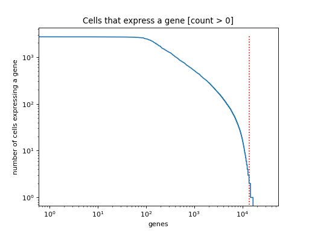

kp_cells¶
-
besca.pl.kp_cells(adata, threshold=0, min_cells=2, ax=None)[source]¶ visualize the minimum number of cells expressing a gene threshold.
This function generates a “knee-plot” visualizing a given min_cells cutoff when given an adata object. Threshold sets the value above which a gene is defined as being expressed. All of the genes to the right of the red vertical line would no longer be included in the dataset if you choose to filter with the shown parameter.
Parameters: - adata (
AnnData) – The annotated data matrix. - threshold (int | default = 0) – integer value that defines the minimum expression threshold above which a gene to be defined as expressed. Default value is 0.
- min_cells (int | default = 2) – visualize the chosen minimum number of cells that need to express a gene threshold
- ax (axes | default = None) – pass the axes class to which your figure should be added
Returns: Figure is displayed
Return type: Example
Generates a “knee-plot” for a the minimum number of cells expressing a gene in a given dataset.
>>> import besca as bc >>> import matplotlib.pyplot as plt >>> adata = bc.datasets.pbmc3k_raw() >>> min_cells = 2 >>> fig, ax1 = plt.subplots(1) >>> bc.pl.kp_cells(adata, min_cells = min_cells, ax = ax1)
(Source code, png, hires.png, pdf)
- adata (
{kind=link}
{kind=link}